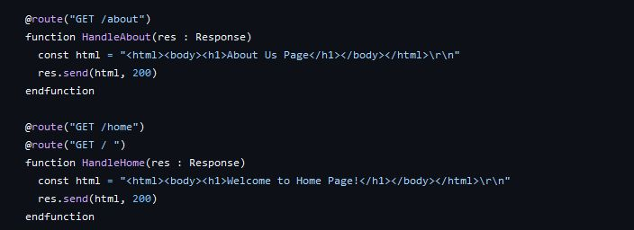
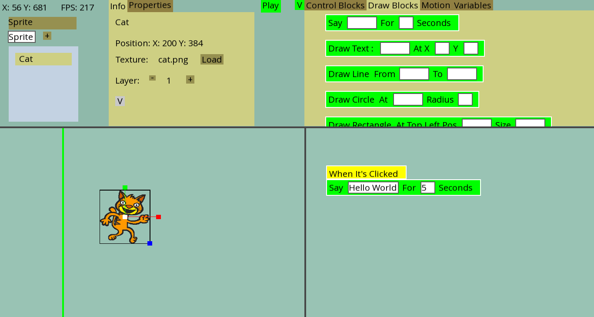
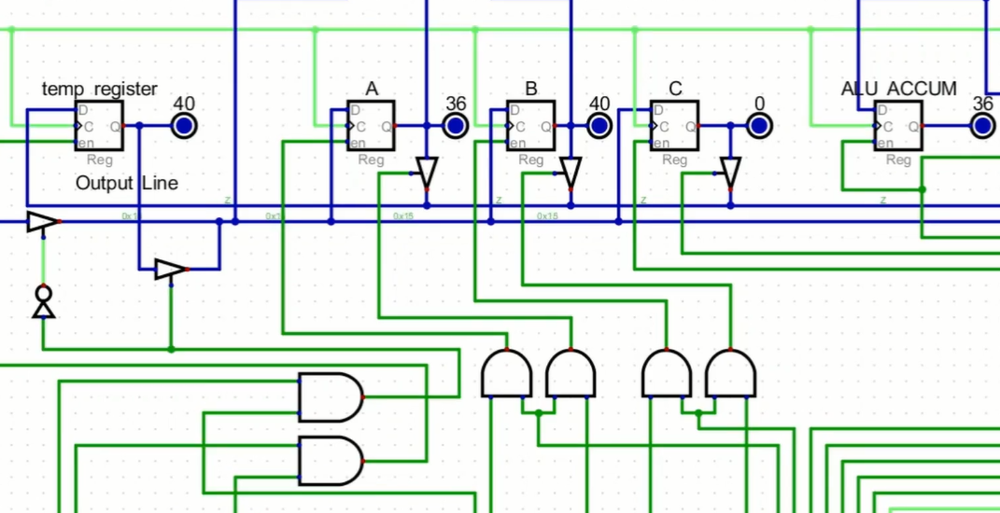
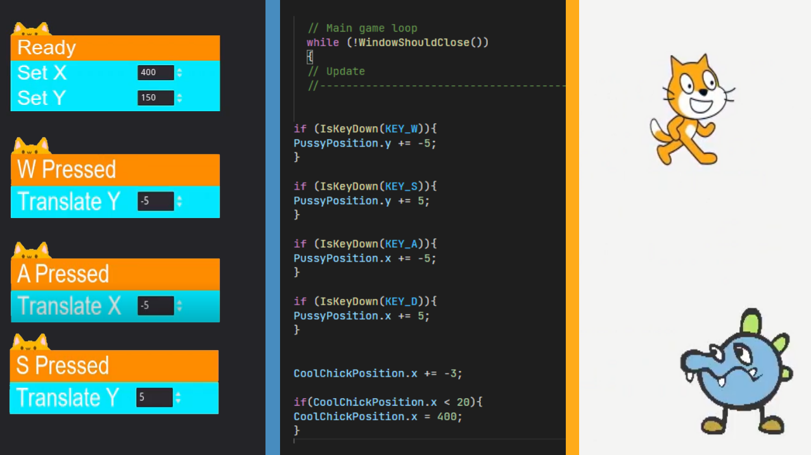

ANIL Programming Language
Python & C++ inspired programming language that transpiles to C and can be embedded within C source files.
View Project in Github >
Python
C
Sclone Game Engine
Make Video games using blocks.Inspired by Scratch.
View Project in Github >
C++
SFML

8 bit CPU, A programming language & A compiler.
A 8 bit CPU, A programming language to program the CPU and a compiler which generates the code for same CPU.
Watch The CPU in Action >View Project in Github >
Python
Digital
A Game Engine And A game made within.
A test scratch like small game engine. And a game made in that engine.
Watch The Game Engine in Action >Watch A Catch Game made in that Engine >
Godot Game Engine
raylib